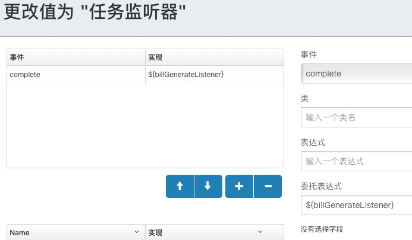

众所周知在spring中工作流引擎activiti/flowable是可以通过委托表达式获取到spring bean的。但在micronaut中会报这个异常，因为activiti/flowable官方已经集成好了spring，而micronaut并没有人帮你集成过，获取不到容器里的bean是理所当然的。
由于micronaut是个新框架，网上翻了一圈都没找到对路的文章，以及在micronaut中怎么解决。
无奈之下自能自己出手了，翻了翻flowable的源码，找到跟spring集成部分的代码，理解了一下，模仿着写了一个针对micronaut的简单集成，打通flowable和micronaut容器，经过一番调试之后问题解决。
在给任务节点设置监听器，运行到这个节点时会出现这个异常flowable Unknown property used in expression: ${testListener}，监听器的设置如下图所示，设置了委托表达式delegateExpression，本意是想获取一个bean作为监听器。

对应的xml为：
<userTask id="task1" name="task1" flowable:formFieldValidation="true">
<extensionElements>
<flowable:taskListener event="complete" delegateExpression="${billGenerateListener}">
</flowable:taskListener>
</extensionElements>
</userTask>
监听器代码如下：
@Context
@Named("billGenerateListener")//监听器名称，跟委托表达式里的设置对应
public class BillGenerateTaskListener implements TaskListener {
@Override
public void notify(final DelegateTask delegateTask) {
delegateTask.getTaskDefinitionKey();
final Map<String, Object> variables = delegateTask.getVariables();
final Object costPrice = variables.get("costPrice");
log.warn("Generate Bill...");
log.warn("costPrice:{}",costPrice);
}
}
下面直接看怎么解决的吧，不扯什么工作原理、底层机制，我们只是为了解决问题，直接抄了能用最好！
我们知道flowable引擎对象ProcessEngine一般是通过ProcessEngineConfiguration#buildProcessEngine()创建的，这是使用引擎的入口。
那么需要在ProcessEngineConfiguration中设置一个自己扩展的ProcessExpressionManager
cfg.setExpressionManager(
new MicronautExpressionManager(applicationContext, cfg.getBeans()));
MicronautExpressionManager:
public class MicronautExpressionManager extends ProcessExpressionManager {
protected ApplicationContext applicationContext;//micronaut的context
public MicronautExpressionManager(ApplicationContext applicationContext, Map<Object, Object> beans) {
super(beans);
this.applicationContext = applicationContext;
}
@Override
protected ELResolver createElResolver(VariableContainer variableContainer) {
CompositeELResolver compositeElResolver = new CompositeELResolver();
compositeElResolver.add(createVariableElResolver(variableContainer));
compositeElResolver.add(createMicronautElResolver());//主要是这里
compositeElResolver.add(new ArrayELResolver());
compositeElResolver.add(new ListELResolver());
compositeElResolver.add(new MapELResolver());
compositeElResolver.add(new JsonNodeELResolver());
compositeElResolver.add(new BeanELResolver());
compositeElResolver.add(new CouldNotResolvePropertyELResolver());
return compositeElResolver;
}
protected ELResolver createMicronautElResolver() {
if (beans != null) {
return new ReadOnlyMapELResolver(beans);
} else {
// 还有这里，在表达式中暴露 application-context
return new MicronautApplicationContextElResolver(applicationContext);
}
}
}
再看下MicronautApplicationContextElResolver：
public class MicronautApplicationContextElResolver extends ELResolver {
protected ApplicationContext applicationContext;
public MicronautApplicationContextElResolver(ApplicationContext applicationContext) {
this.applicationContext = applicationContext;
}
//主要就是这里通过bean名称获取micronaut的bean
@Override
public Object getValue(ELContext context, Object base, Object property) {
if (base == null) {
String key = (String) property;
final Object o = applicationContext.getBean( Object.class, Qualifiers.byName(key));
if (o!=null) {
context.setPropertyResolved(true);
return o;
}
}
return null;
}
@Override
public boolean isReadOnly(ELContext context, Object base, Object property) {
return true;
}
@Override
public void setValue(ELContext context, Object base, Object property, Object value) {
if (base == null) {
String key = (String) property;
final Object o = applicationContext.getBean( Object.class, Qualifiers.byName(key));
if (o!=null) {
throw new FlowableException("Cannot set value of '" + property + "', it resolves to a bean defined in the micronaut application-context.");
}
}
}
@Override
public Class<?> getCommonPropertyType(ELContext context, Object arg) {
return Object.class;
}
@Override
public Iterator<FeatureDescriptor> getFeatureDescriptors(ELContext context, Object arg) {
return null;
}
@Override
public Class<?> getType(ELContext context, Object arg1, Object arg2) {
return Object.class;
}
}
好了，抄完作业就阔以了。
原文发表于http://jenwang.me
更多交流请关注公众号：
家里买了台 NETGEAR 路由器刷了梅林固件，可以在 USB 接口上挂个存储当 NAS 用，发现家里的移动宽带是没有公网 ip 的，于是在外网访问不到内网，ddns 也没法用了（不要给我推荐花生壳内网版😝）。那么，需求就是如何让外网访问到内网ip。
于是想到了从内网到公网上的某台机器建立一条 ssh 隧道，通过访问公网机器把数据穿透到内网，实现方法：
在内网 10.96.x.x 上执行 ssh -N -f -R 8088:10.96.x.x:443 root@167.88.x.x -b 0.0.0.0 "vmstat 30"
让外网可以通过公网的 167.88.x.x:8088 访问到内网10.96.x.x:443
备注：167.88.x.x上需要在
/etc/sshd/sshd_config中修改GatewayPorts no为GatewayPorts yes,
否则 8088 端口是绑定在 127.0.0.1 上的，只有本机能访问。
群晖的 quickconnect，以及内网版的 ddns 原理应该都类似，实现方式可能有所不同。这种可用性关键在于公网中转服务器的网速和通道的稳定性。
有同事的java系统运行一段时间后发生请求阻塞的情况(返回504)，从仅有的内存dump文件看，大部分线程都阻塞在了一个本地缓存（jodd cache）的读锁上了（ReentrantReadWriteLock$ReadLock.lock）。
继续阅读 →** 经常碰到这种事情: **
在一些非maven工程中(由于某种原因这种工程还是手工添加依赖的),需要用到某个新的类库(假设这个类库发布在maven库中),而这个类库又间接依赖很多其他类库,如果依赖路径非常复杂的话,一个个检查手动下载是很麻烦的事.
** 下面给出一个便捷的办法: **
继续阅读 →厂内经常出现序列化对象版本不匹配问题，于是发本文说明一些序列化的注意点
调用MQ、memcached、rpc等等涉及到远程通讯的都会经过序列化，虽然客户端透明的封装了细节，但底层是一定会有序列化操作的。因此了解序列化的注意事项是非常有必要的，可以避免误用导致潜在的风险
继续阅读 →这是个比较典型的java内存使用问题，定位过程也比较直接，但对新人还是有点参考价值的，所以就纪录了一下。
下面介绍一下在不了解系统代码的情况下，如何一步步分析和定位到具体代码的排查过程
（以便新人参考和自己回顾）
需求:
比如要自定义本地maven库的路径，又不想在project.clj中定义，因为每个人的本地路径不同，写在工程中不好。那么在profiles.clj中定义比较好：
{:user {:local-repo "D:\\m2\\repository"}}
当庆幸找到解决方法时，一运行发现根本没生效是件很扫兴的事。
网上能找到的资料都告诉你profiles.clj这个文件是放在~/.lein/这个目录下的。
实际情况是：
如果自定义了LEIN_HOME的路径，那么profiles.clj就应该放在LEIN_HOME目录下，而不是~/.lein/下
否则不会生效，切记。
java中的依赖冲突问题一直比较头疼，特别是做公用包给其他系统用的时候，现在都不敢引入太多的依赖，基本上每次都要帮别人解决依赖冲突的问题，非常麻烦。
特别是碰到一些老系统还不是用maven管理的，人家用你的一个功能还要拷一堆jar包过去，然后排出哪些包在系统中已经有了，版本是否兼容等问题，非常蛋疼。为了方便人家使用就想把所有依赖打成一个jar包提供出去，但这样潜在的依赖冲突问题就会更严重，以后出现冲突时都不知道哪个jar包含了冲突的类。
更不想引入OSGi这种重量级的东西来隔离依赖。
继续阅读 →大家知道单元测试对代码质量的保障作用已经没什么可说的了。Microbenchmark（微基准测试）也是保证代码质量的重要手段，也是容易忽略的，它用来衡量一些小的代码片段的性能指标，完善的Microbenchmark可以便于定位出一些性能瓶颈,它类似于单元测试,能够进行持续集成,当代码有改动时能够通过持续集成的历史数据 看出对性能的影响点。
继续阅读 →1.jenkins安装caliper-ci插件(Caliper CI Plugin)
继续阅读 →